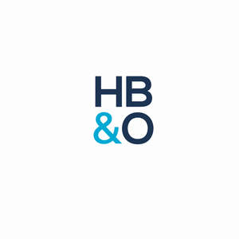

Trade Mark Journal No.2026/005 30 January 2026
UK00004323254 13 January 2026 (35)

- Class 35
- Accountancy; Taxation [accountancy] consultancy; Tax consultancy [accountancy]; Accountancy services; Taxation [accountancy] advice; Taxation [accountancy] consultation; Tax advice [accountancy]; Chartered accountancy business services; Tax consultations [accountancy]; Tax planning [accountancy]; Accountancy advice relating to taxation; Accountancy, book keeping and auditing; Book-keeping and accounting; Book-keeping and accounting services; Accounting consultancy relating to taxation; Accounting; Consultancy relating to tax accounting; Tax return advisory [accountancy] services; Accountancy advice relating to tax preparation; Computerised accounting; Business accounting advisory services; Accounting, in particular book-keeping; Accountancy services relating to accounts receivable; Business auditing; Business consultancy to firms; Consultancy regarding business organisation and business economics; Forensic accounting services; Accounting services; Accountancy advice relating to the preparation of tax returns; Business organisation consultancy; Accounting advisory services; Business administration consultancy; Business advice relating to accounting; Consultancy relating to auditing; Book-keeping; Business consultancy (Professional -); Consultancy (Professional business -); Professional business consultancy; Bookkeeping; Financial auditing; Business consultancy; Business management and organisation consultancy; Business management organisation consultancy; Business organisation and management consultancy; Business consultancy services relating to insolvency; Computerised accounting (Preparation of -); Consultancy relating to business organisation; Administrative accounting; Management accounting; Recruitment consultancy for legal secretaries; Professional consultancy relating to business management; Business recruitment consultancy; Business management and organisation consultancy services; Consultancy relating to business management and organisation; Computerised auditing; Business organisation consulting; Provision of information relating to accounts [accountancy]; Professional business consultancy services; School fee accounting services; Business appraisal consultancy; Business management and consultancy; Business management consultancy; Consultancy and information services relating to accounting; Computerised book-keeping; Business secretarial services; Veterinary practice business management; Business consultancy and advisory services; Business advisory and consultancy services; Computerised tax assessments (preparation of -) [accounting]; Computerized accounting services; Business organisation and management consulting; Business consultancy services; Business management consultancy and advisory services; Consultancy and advisory services for business management; Accounting services relating to tax planning; Consultancy relating to business management; Consultancy relating to business advertising; Business management consultancy in the field of corporate travel; Business advice and consultancy relating to franchising; Business management and consultancy services; Business management consultancy services; Business organisation and management consulting services; Consultancy and advisory services relating to business management; Consultancy relating to the preparation of business statistics; Corporate management consultancy; Professional consultancy relating to marketing; Business marketing consultancy; Corporate management consultancy services; Computerised accounting (Maintenance of -); Business organisation advice; Advisory services relating to business organisation; Business planning consultancy; Advisory services relating to business organisation and management; Consultancy relating to business efficiency; Assistance and consultancy relating to business management and organisation; Consultancy relating to business analysis; Business advice relating to financial re-organisation.
HB&O Ltd